|
St. Petersburg is one of the largest northern cities in the world. It is located on the coast of the Gulf of Finland in the Baltic Sea at the mouth of the Neva River. St. Petersburg metropolitan area is composed from numerous islands divided by rivers and canals, so it is often called the "Northern Venice". Ninety small rivers and canals occupy one-tenth of the city's area. There are 308 bridges; the total length of them is 16 km. 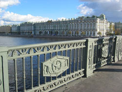 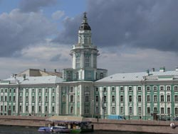 Saint Petersburg is one of the most beautiful cities of Europe and a prominent European cultural center that can offer many outstanding cultural attractions. It is the second largest city in Russia with about 5 million inhabitants. It is often considered as a Northern cultural, historical and architecture capital of the country. 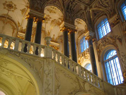 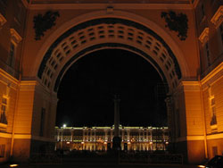 The city was named in honor of patron saint of Peter The Great, who founded the city in 1703. Peter the Great designed the city after the European capitals and it has been referred as Russia's "window into Europe" for a long time. The construction began with the Peter and Paul Fortress. It was laid down on Zaiachiy Island, just off the right bank of the Neva. 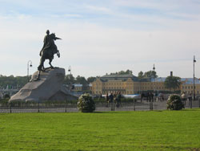 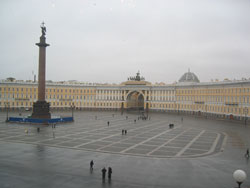 Long, straight boulevards, vast spaces, gardens and parks were designed by the most famous architectures of that times. Among the rich variety of architectural details, decorative wrought-iron fences, monuments and decorative sculptures, the granite embankments and bridges of the Neva River constitute a unique ensemble. 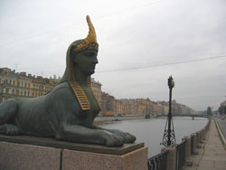 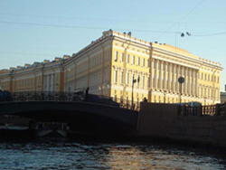 The eight drawbridges spanning the Neva attract a lot of tourists during the period of white nights. Bridges open from May to late October according to a special schedule between approximately 2 a.m. and 4:30 a.m. St. Petersburg is famous for its palaces. The Winter Palace (1754-1762), a masterpiece of baroque architecture, is now a housing the Hermitage Museum. The architect of the palace, Bartolomeo Rastrelli also contributed to several palaces of the Nevsky Prospect - the Stroganov palace (1752-1754, now a wax museum), the Vorontsov palace (1749-1757, now a military school), and the Anichkov Palace (1741-1750, many times rebuilt, now a palace for children). 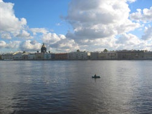 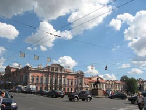 There are also many other baroque palaces - the Sheremetev house on the Fontanka embankment (also called the Fountain House), the Beloselsky-Belozersky Palace (1846-1848) on the Nevsky Prospekt, and many others. 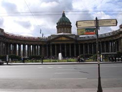 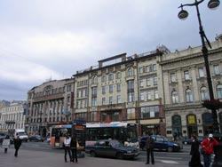 Nevsky Prospekt is the main avenue of St. Petersburg, where the majority of business, trade activities, cultural life, shopping, entertainment and nightlife are located. Kazan Cathedral, Dom Knigi book store, many churches of different denominations, the largest department store in the city Gostiny Dvor, the National Library of Russia, the monument to Catherine the Great, Anichkov Bridge with its beautiful statues and much more are situated there. St.Petersburg is also surrounded by small towns with beautiful parks, such as Petergof (Petrodvorets), Pushkin (Tsarskoe Selo), Pavlovsk and some others. St. Petersburg has a moderate climate, thanks to the warm air from the Atlantic Ocean. Summer lasts from June to the middle of September. The average temperature in summer is +18oC. The Petersburg weather is known for its changeability, from one day to the next. In especially warm days the temperature can reach +25oC...+30oC. St. Petersburg is famous for its White Nights - a period from the last week of June through the last week of July - when the dark of night lasts for only about 40 minutes, and the rest of the night is almost as light as day. 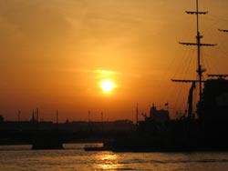 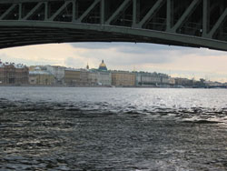 |
© 2008 Victor Karandashev